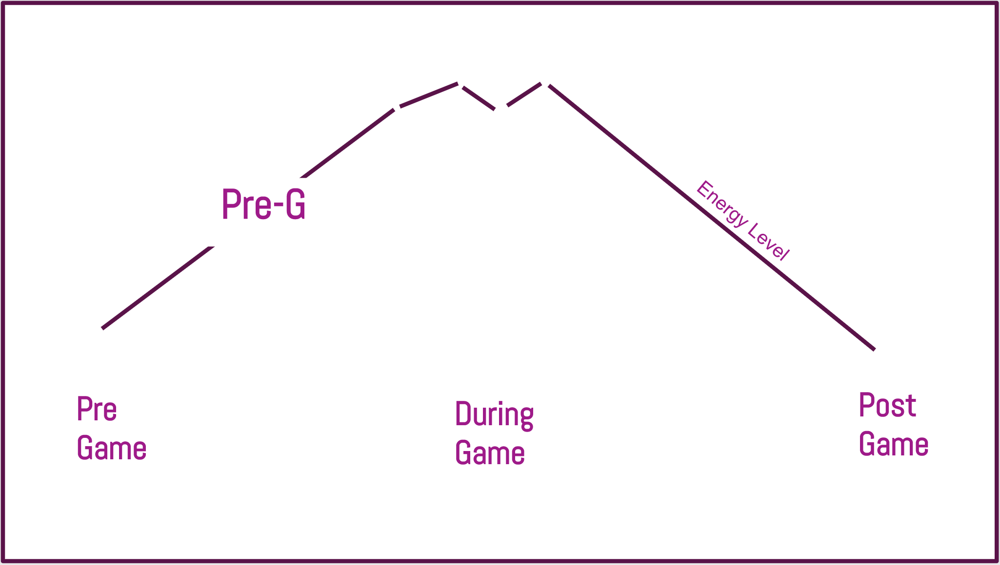

Role: Market Research, Ideation, Prototyping
Tools Used: Adobe Illustrator, 'The Startup Owners Manual', Udacity,
Companies: NYC Media Lab, Verizon, Yahoo Sports
Pre-G
Pre:G is a sports trivia game app that utilizes machine learning, video streaming, and betting to further enhance the pregame community and excitement around sports.
Concept
Summer 2018 I was selected as one of four teams awarded $5,000 to participate in the 8-week NYC Media Lab Sports/Media/Tech Startup Bootcamp. Created and pitched a startup company to encourage and support customer discovery and market validation.
My teammate Barsha and I created a new experience for sports fans that utilize both the excitement that happens before the games and the much aniticipated release of the 5G network.
Research + User Interviews
1. The mobile phone has been dominating the tech industry
2. Collaborative App games are a hit, for example: Words w/ friends, HQ Trivia is a phenomenon, Pokemon Go, and Video is exploding.
3. Collaborative mobile games have been highly popular.
What if you take short edited sports videos combine it with trivia and create a way for families and friends who are separated from each other, to engage around sports content on Game day?
Questionaire 1:
Barsha and I conducted over eighty interviews in a 8 week period. We started this process with creating a questionaire that we handed to people within our network. With this questionaire we were trying to get a sense of how sports fans get their information and where they watch games.
Main Questions:- Where and with who do you watch a game?
- What is your go-to for getting player information?
- Is this information important during a live game?
- Do athletes have any influence on your purchases?
- What process do you go through for purchasing athletic gear?
The graph below maps out the various responses we received.
Key takeaways:
- Most people went to games for entertainment
- Everyone uses google
- Jumbotron is enough information
- Look up information in rare cases
- Athletes have little impact on their purchases. Qualities like: price, quality/durability, and athlete popularity played a main role in the purchasing of team gear.
Questionaire 2:
With our second questionaire we were trying to get a sense of how obsessive the average sports fan was about the statistics of their favorite team.

Key takeaways: Not many people are serious sports fans. Those we talked with become fans for the community element and comradery.
Questionaire 3:
We changed our tactic and ditched the questionare. We went to the spaces where we knew sports fans would be. During the World Cup we went to various sports bars venues throughout Manhattan and Brooklyn during certain matches to conduct more interviews. While in these spaces before the game, we would ask simple questions:
Who do you think will win? Why?
Have you always been a fan? Have you watched every game?
Do you wich someone was here who is not here?
Key takeaways: A feeling of Pre-Game excitement and aniticipation was always there before a game. Fans tend to congregate to the same spaces. Park Slope, Brooklyn has bars that are famous for hosting European sports fans. While Columbian soccer fans can be seen in Jackson Heights, Queens. By mapping these patterns of where sports fans go before kick off, we thought it best to utilize the mobile device for our experience.
Prototype 1
We wanted to escalate this feeling of excitement before games, and we started to prototype mobile game ideas that sports fans would enjoy. So we decided that our idea would inervene in this pre game realm of the game experience.
Continued Research
Now focusing on building out our business model plan, we read through Steve Blank and Bob Dorf's "The Startup Owner's Manual". This book proved to be a valuable resource in understanding our market size and target audience. We spent a lot of time forming our value propositions.
Our value propositions highlight the community, connection, and competitive nature of sports watching. While Pre-G enhances these elements.With the help of 5G we will have quicker access and higher quality videos.
Below is our business model canvas
High Fidelity Prototype
In the end we created an experience where sports fans can play sports trivia specific to the game they are about to watch.
Your profile will show your expeprtise level associated with certain teams. This expertise level will be determined and constantly changing after evey trivia game you participate in.
You can have a family group that plays against each other. Or you can set you profile to "searching" meaning that you are looking for a team in your area to play trivia with. A team within your vicinity or in the bar can recruit you to join their team.
The incentives:
Bragging rights
Expertise level increase
Meeting other sports fans
A chance to win discounted team gear or tickets